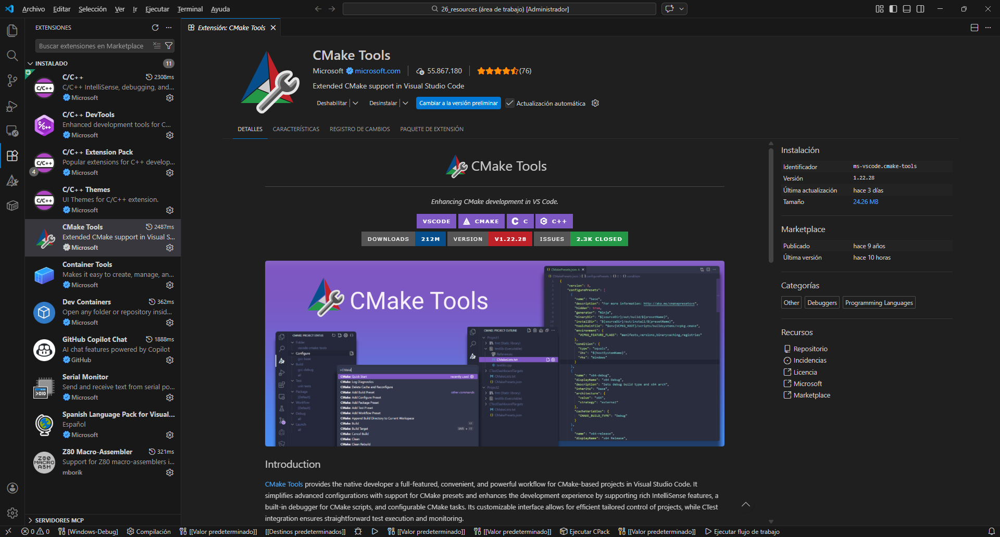
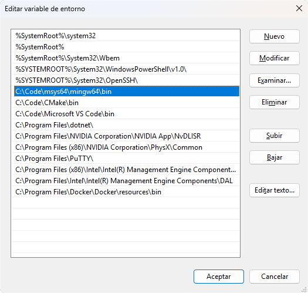
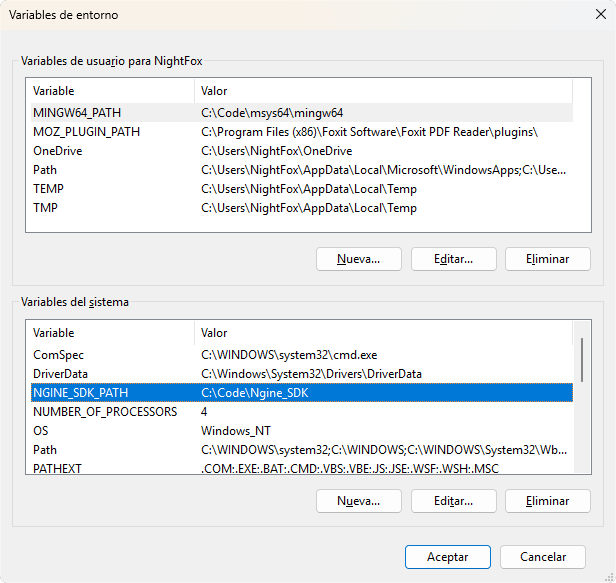
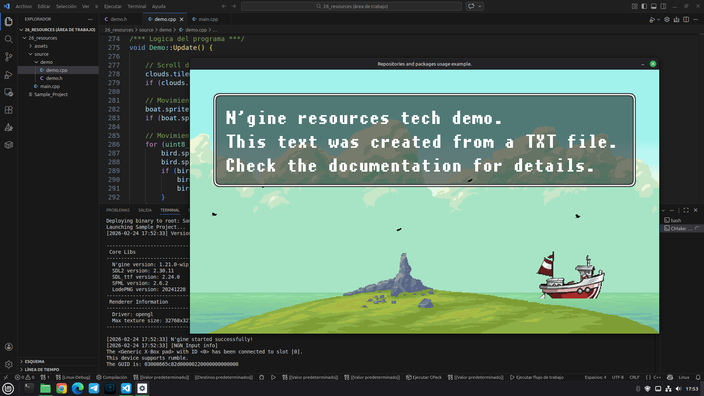

N'gine has evolved. The SDK has migrated to a modern workflow using Visual Studio Code and CMake. This manual covers the setup for Windows, Linux, and Raspberry Pi.
ngn.X.X.X-stable.
Before specific configurations, ensure you have the editor installed:
C/C++ (IntelliSense, debugging)CMake Tools (Project configuration)
Step A: Download and install CMake. (Select "Add CMake to system PATH" during install).
Step B: Download and install MSYS2.
Open the MSYS2 terminal (MINGW64) and run:
pacman -Syu pacman -S mingw-w64-x86_64-toolchain
Windows needs to know where the compiler and the SDK are.
Edit the System Environment Variables. Inside the Path variable, add the path to your MinGW64 bin folder. If you used the default MSYS2 installation path, it will be:
C:\msys64\mingw64\bin
(If you installed MSYS2 in a custom location, for example C:\Code\msys64, adjust the path accordingly).

1. Copy the Ngine_SDK folder (containing libs) to a safe place (e.g., C:\Code\Ngine_SDK).
2. Create a NEW system variable named NGINE_SDK_PATH pointing to that folder.

Templates/cmake folder in the SDK.basic_template folder to your workspace (e.g. C:\Projects\MyGame).